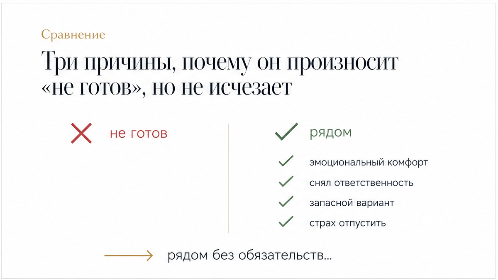
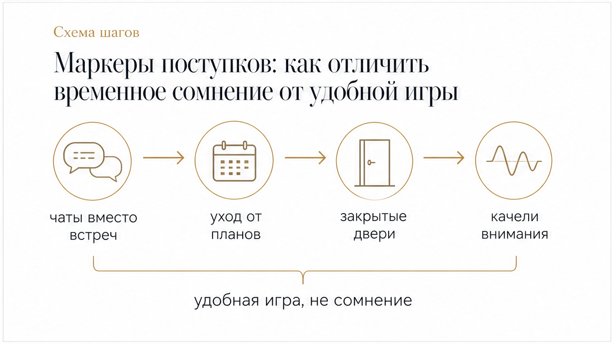
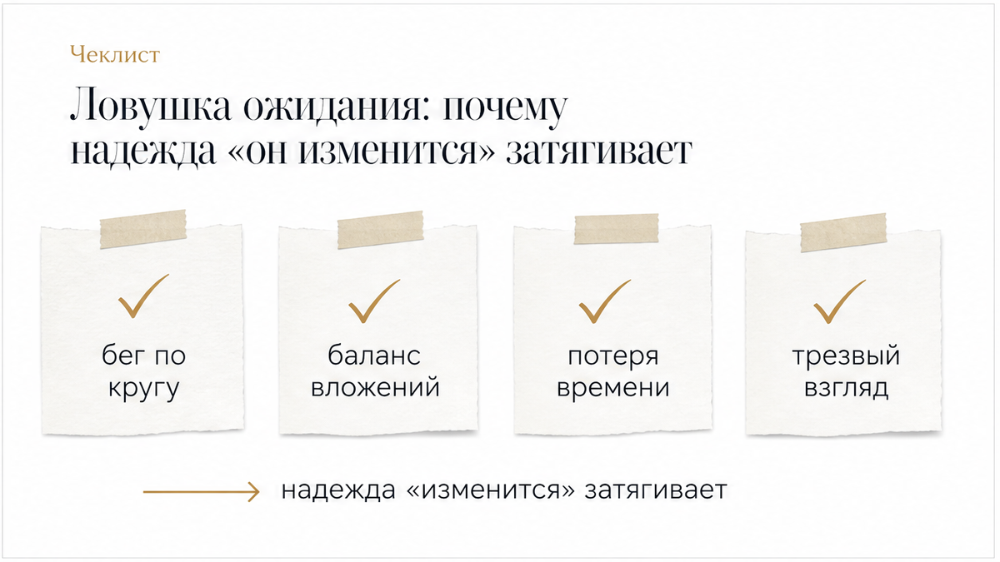

Экран смартфона гаснет после короткого сообщения: «Я сейчас не готов к серьёзным отношениям». Но уже через двадцать минут он присылает смешное видео, вечером привычно спрашивает, как прошёл день, а на выходных зовёт заехать выпить кофе. Диалог не прервался, контакт не остыл, но в воздухе повисла двусмысленная граница: тёплое общение и близость продолжаются, а ясности и совместного завтра нет. Разберём этот конкретный пример и скрытую динамику такого поведения.
Когда слова мужчины расходятся с его постоянным присутствием в твоей жизни, возникает выматывающая развилка: бесконечно ждать, пока он «разберётся в себе», или признать, что этот формат удобен только ему. Карты не залезают в чужую голову и не читают мысли, но помогают трезво увидеть скрытую динамику связи и убрать иллюзии. Чтобы нащупать опору, важно понять главное: что на самом деле держит его рядом, топчутся ли отношения по кругу и куда утекает твоя энергия. В боте можно сделать 3 бесплатных расклада на отношения — выбирай быстрый триплет на текущую ситуацию или крест на скрытые мотивы, либо запускай расклад в MAX.

Фраза о неготовности редко означает немедленный разрыв. Чаще всего мужчина остаётся в твоём поле из-за вполне осязаемого эмоционального комфорта. Ему искренне приятно твоё внимание, поддержка, разговоры и физическая близость. Но при этом он не собирается менять привычный уклад жизни, подстраиваться под твои потребности и брать на себя ответственность за общее будущее.
Вторая частая причина — страх захлопнуть дверь насовсем. Произнося вслух «я не готов», он заранее снимает с себя любые обязательства и оформляет себе индульгенцию на будущее: «я же сразу честно предупредил». При этом он удерживает доступ к твоему теплу, оставляя тебя в роли удобного запасного аэродрома на случай скуки или одиночества.
Наконец, его симпатия и влечение могут быть абсолютно искренними. Ему действительно хорошо рядом с тобой в моменте, но между живым интересом и готовностью строить партнёрство лежит пропасть. Человек хочет получать радость от контакта здесь и сейчас, но не собирается рисковать своим спокойствием и вкладывать ресурсы в следующий шаг.

Когда слова путают, единственный надёжный ориентир — реальные дела и динамика вложений. Пройди по ключевым шагам, чтобы оценить ситуацию трезво:

Услышав фразу «я не готов», очень легко провалиться в опасную иллюзию: «Ему просто нужно немного времени, он привяжется и поймёт, как сильно я ему дорога». Проходят недели и месяцы, встречи и звонки продолжаются по привычному расписанию, но статус отношений не сдвигается ни на миллиметр.
Главная ловушка этой паузы — постепенная потеря собственного голоса. Соглашаясь на половинчатый, подвешенный формат вопреки собственному желанию определённости, ты день за днём предаёшь свой запрос. Мужчина уже прямо обозначил свои границы. И пока ты терпеливо ждёшь его взросления, он просто привыкает брать тепло, заботу и внимание без какой-либо взаимной ответственности.
Карты таро не работают как телепатия и не угадывают чужие тайные мысли. Они дают трезвую сверку с реальностью, подсвечивая скрытые механизмы связи, распределение сил и твои собственные слепые зоны. Вместо попыток разгадать чужие намерения задай картам прямые вопросы о динамике:
Есть ли у этой связи реальный потенциал для шага вперёд или сценарий застрял на беге по кругу? Каков реальный баланс вложений: сколько сил и чувств отдаёшь ты и сколько возвращается конкретными поступками с его стороны? И что произойдёт с общением, если ты перестанешь первой удерживать контакт и сглаживать неопределённость?
Затянувшееся подвешенное состояние выматывает гораздо сильнее, чем самая строгая правда. Если ты устала гадать и хочешь вернуть себе уверенность, не оставайся наедине с сомнениями. Заходи в бот ТАРО СЕЙЧАС и сделай 3 бесплатных расклада: триплет или крест помогут расставить точки над «i» и увидеть реальное положение дел. Также можно разложить карты через расклад в приложении MAX или открыть бота в Telegram.